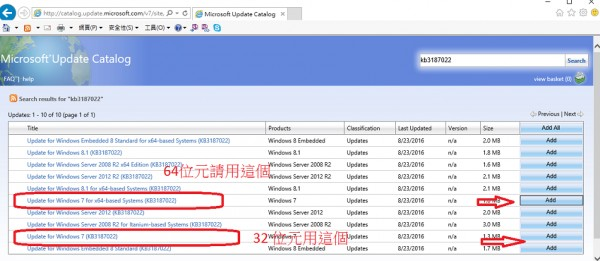

貼紙機印不出第三張貼紙
客人訂購5杯飲料，貼紙只能出2張，第3張以後的都跑不出來，需要在哪裡設定？
2 個回答
您好
站長已經證實了這是windows 10 在2016 年 8 月 9 日發佈的更新檔有問題 更新檔為KB3176493 如果windows有開自動更新的話 很有可能列印就會出問題
已經有不少使用者遇到了 根據微軟內部員工的所寫的部落格 預計會在
2016/9/13 發布修正,除了耐心等待微軟修正外,就只能重灌windows,然後斷網停止windows更新,度過這段等待期了
請參考
849.html
站長已經證實了這是windows 10 在2016 年 8 月 9 日發佈的更新檔有問題 更新檔為KB3176493 如果windows有開自動更新的話 很有可能列印就會出問題
已經有不少使用者遇到了 根據微軟內部員工的所寫的部落格 預計會在
2016/9/13 發布修正,除了耐心等待微軟修正外,就只能重灌windows,然後斷網停止windows更新,度過這段等待期了
請參考
849.html
微軟剛發佈了修正 但只針對windows 7 ,KB 3187022
如果是window 10 可能還要等等
win7 win8 修正檔下載位置 請務必用IE 開啟下面網址
http://catalog.update.microsoft.com/v7/site/Search.aspx?q=KB3187022

請依照自己的windows版本 做更新